紅色穿搭 / Red
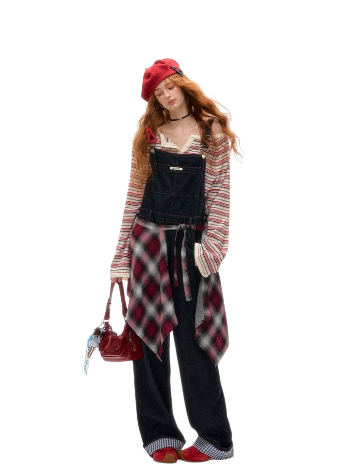
以紅色作為亮點，整體更有精神。
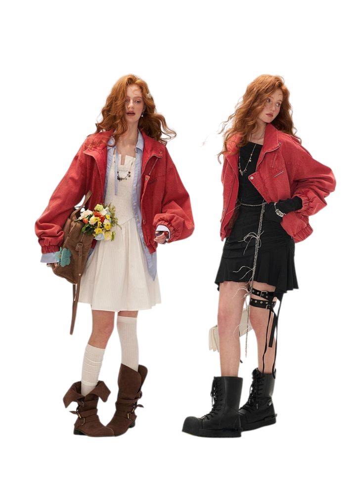
低飽和紅色搭配基礎色，耐看不刺眼。
黃色穿搭 / Yellow
明亮色調點綴，讓整體更有活力。
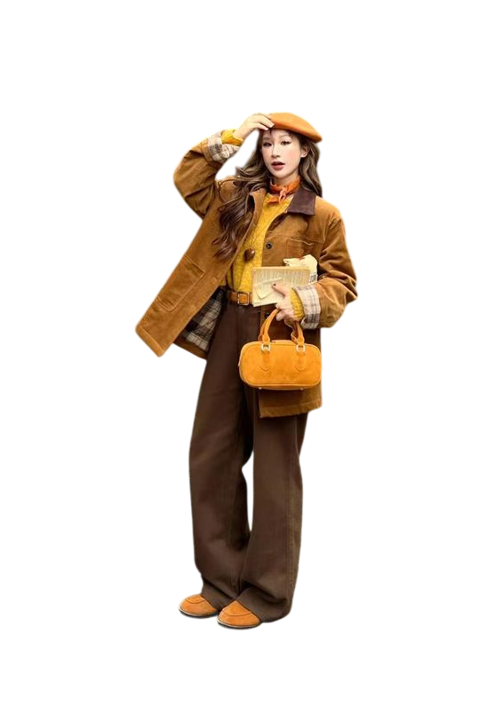
4. 柔和黃色搭配基礎色，輕鬆不張揚。
黃綠色穿搭 / Yellow-Green
柔和色調搭配基礎單品，自然不突兀。
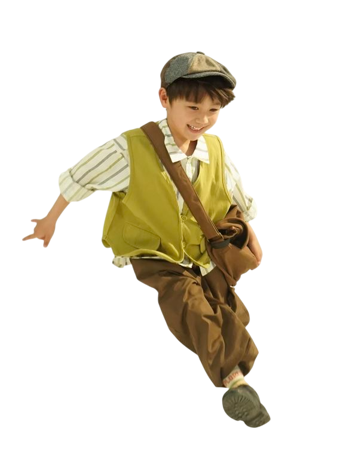
清亮色彩帶來輕快氛圍，看起來更有精神。
藍色穿搭 / Blue
清爽色調，讓整體看起來更俐落。
低調藍色展現沉穩氣質，耐看不膩。
紫色穿搭 / Purple
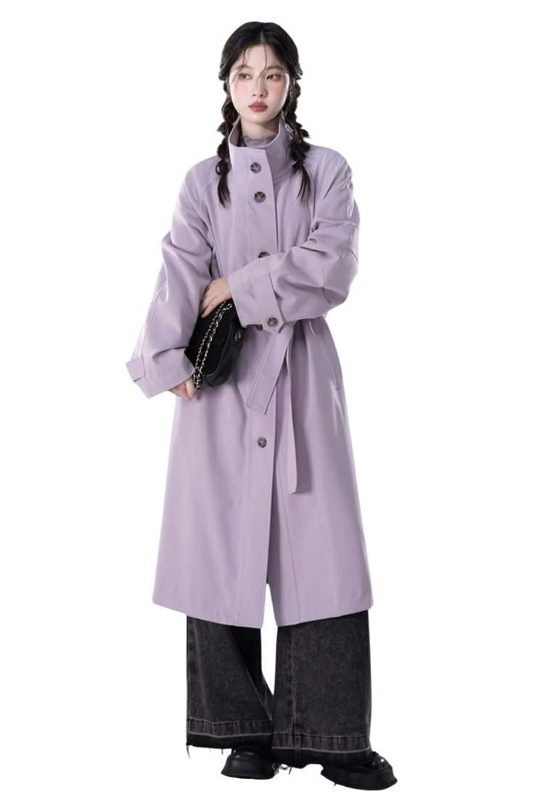
優雅色調，低調中帶有質感。
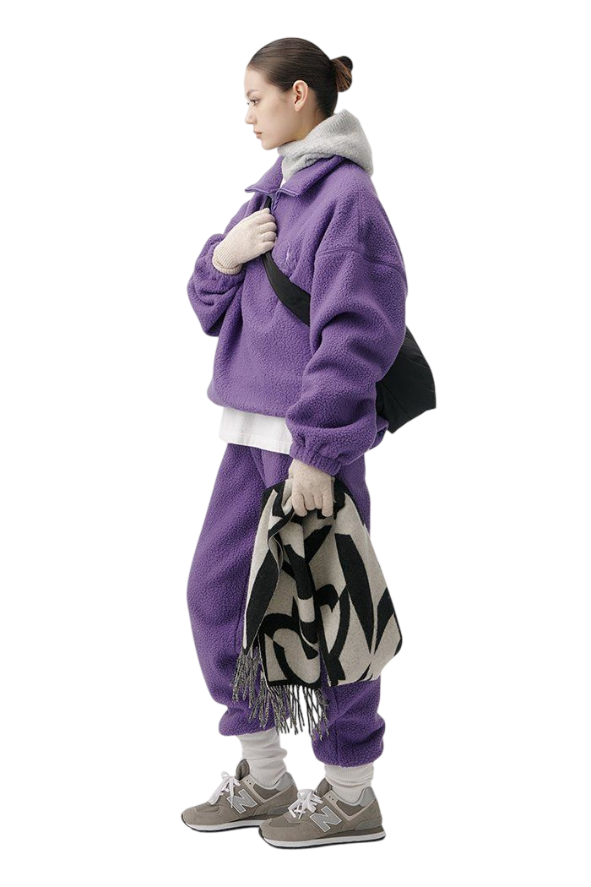
深淺紫色混搭，打造獨特穿搭氛圍。
黑色穿搭 / Black
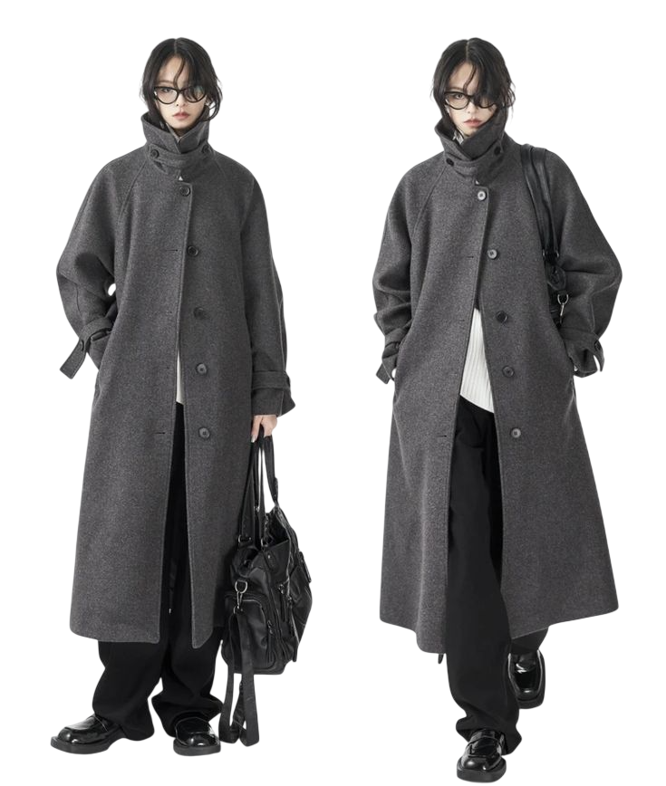
經典百搭，簡單就有質感。
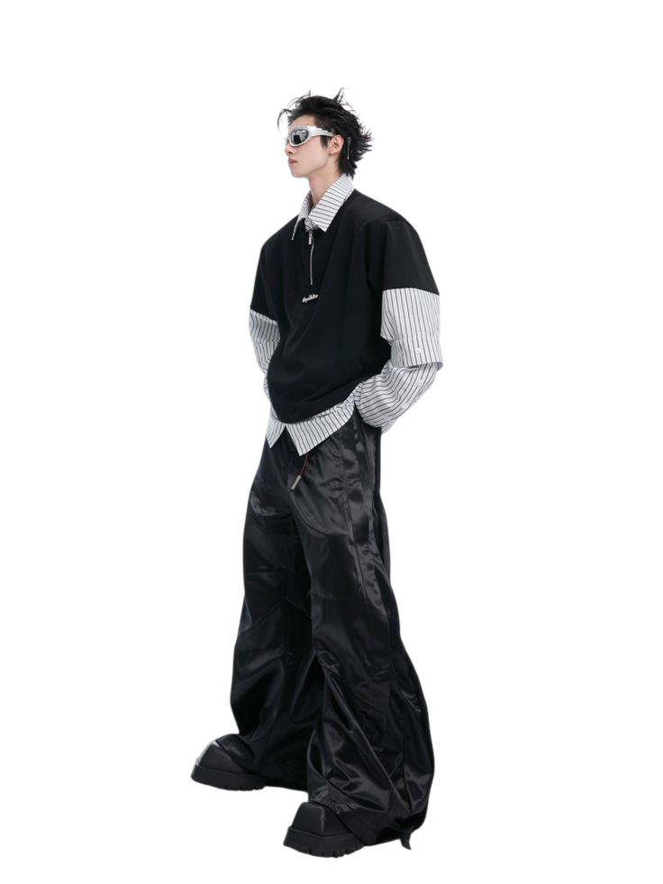
全黑或局部黑色，展現酷感與神秘感。
咖啡色穿搭 / Brown
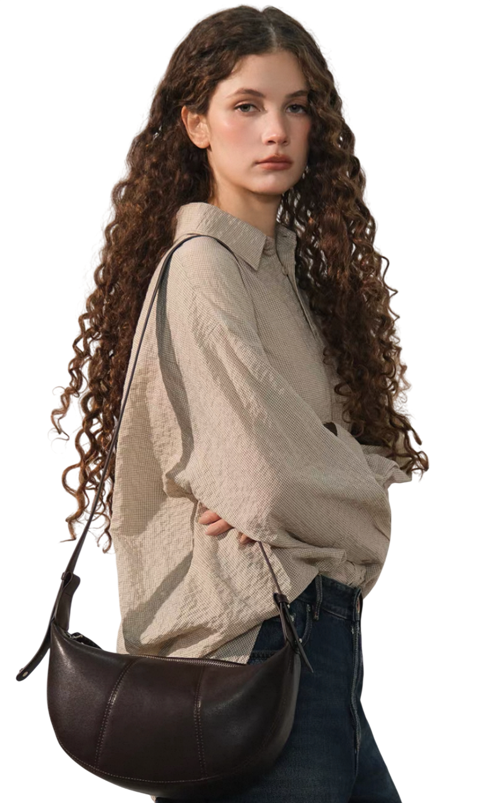
溫暖色調，自然散發沉穩氣質。
柔和色彩打造舒適感，適合秋冬與日常。
暗色穿搭 / Dark
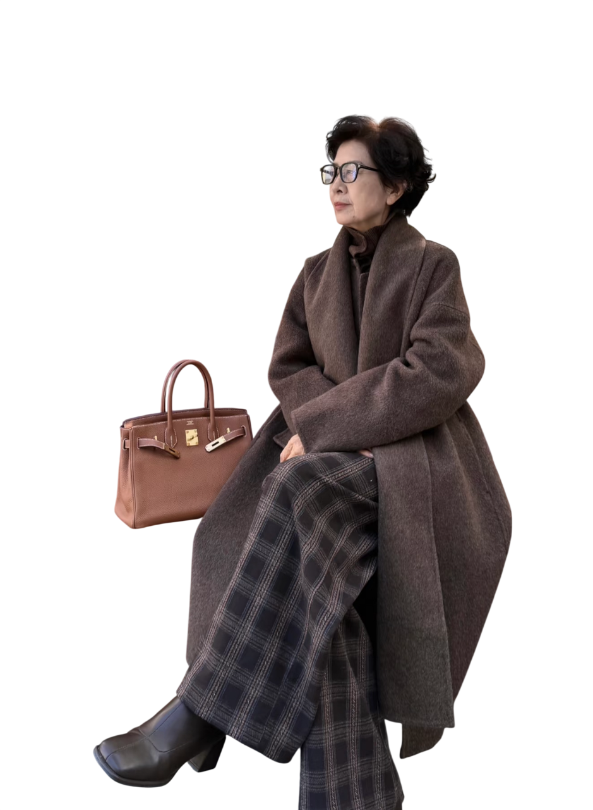
深色單品打造沉穩質感，簡單就有氣場。
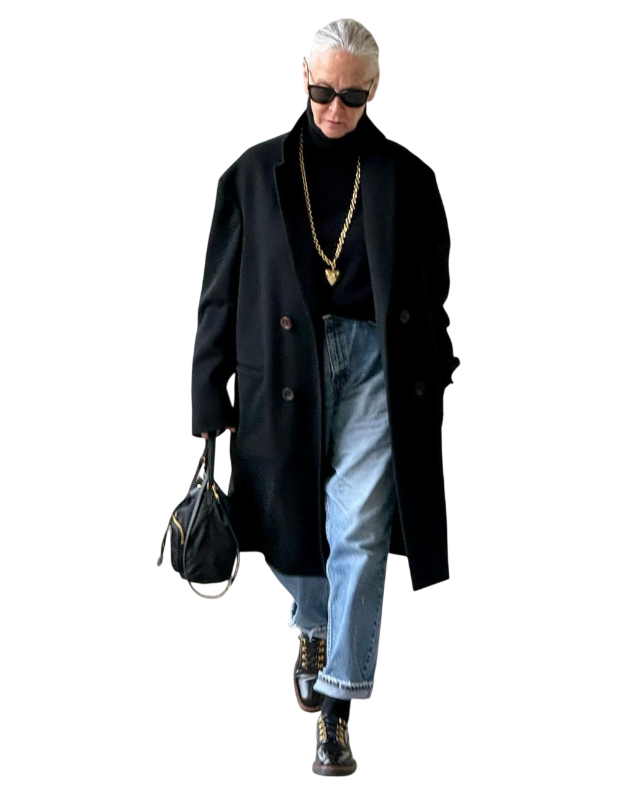
暗色細節搭配俐落剪裁，低調又有態度